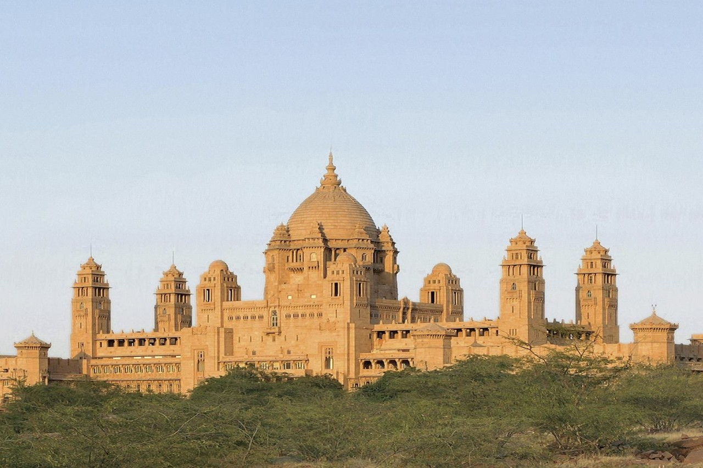
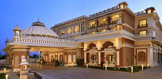

Jodhpur is the second-largest city in Rajasthan and the former capital of the Marwar region. It is popularly called "the Blue City" as it looks completely blue from an aerial view because of its blue walls and houses. Jodhpur is primarily famous for its temples, lakes and snacks, with the magnificent Mehrangarh Fort being the main attraction.
The magic of Jodhpur lies in the streets of the old city itself, which circles the mighty Mehrangarh. Hundreds of shops, guesthouses, eating joints, and vendors make it a bustling chirpy town, especially near the landmark clock tower and Sardar Market. The new and modern Jodhpur lies beyond Mehrangarh. Nearby Jaswant Tada and Umaid Bhawan Palace are also among the top attractions in Jodhpur.
Jodhpur is famous for its delectable food items, especially Pyaaj Kachori, Mirchi Bada and Mawa Kachori. In September, the city hosts the colourful Marwar Festival and Rajasthan International Folk Festival. Some traditional villages are located around Jodhpur, and a tour of these villages (called Bishnoi Village Safari) is one of the popular things to do here. One of the strangest temples in India, where a Royal Enfield motorbike is worshipped, is located nearby and worth visiting. The ancient Thar desert town of Osian is also located here, 65km north of Jodhpur.
Seen in the backdrop of the movies, the most popular being The Dark Knight Rises, Jodhpur attracts hundreds of thousands of visitors worldwide. Moreover, it is conveniently located in the centre of Rajasthan, making it the base for visiting nearby places.